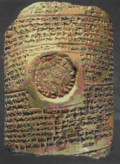

Some have interpreted the mark of the beast as an actual tattoo of
some sort or perhaps a microchip injected into the hand or the
forehead. Others think it might be connected to a credit card, national
health card or bar code. From a practical standpoint this is a
monumental task that would be difficult to accomplish on a world-wide
basis. I would like to present an alternate interpretation that you may
not have heard before. I will present a logical interpretation of both
the seal of God and the mark of the beast that complement each other.
THE SEAL OF GOD
The following are verses that refer to a seal of God.
John 6:27 Labour not for the meat which perisheth, but for that
meat which endureth unto everlasting life, which the Son of man shall
give unto you: for him hath God the Father sealed.
2 Cor 1:22 Who hath also sealed us, and given the earnest of the
Spirit in our hearts.
Eph 1:13 In whom ye also trusted, after that ye heard the word
of truth, the gospel of your salvation: in whom also after that ye
believed, ye were sealed with that holy Spirit of promise,
Eph 4:30 And grieve not the holy Spirit of God, whereby ye are
sealed unto the day of redemption.
Note that the previous verses seem to indicate a figurative seal,
not a physical seal. The following verses would seem to be a physical
seal of some kind on the forehead.
Rev 7:2 And I saw another angel ascending from the east, having
the seal of the living God: and he cried with a loud voice to the four
angels, to whom it was given to hurt the earth and the sea,
Rev 7:3 Saying, Hurt not the earth, neither the sea, nor the trees,
till we have sealed the servants of our God in their foreheads.
Rev 9:4 And it was commanded them that they should not hurt the
grass of the earth, neither any green thing, neither any tree; but only
those men which have not the seal of God in their foreheads.
At this point, let's define a seal. The seal of a king contains
three things, first the name, second his title or claim to authority,
and thirdly, the region of his rule. Henry VIII, King of Britain, Wales
and Scotland for example. What is the purpose of a King's seal? The
Bible tells us clearly:
Dan 6:15 Then these men assembled unto the king, and said unto
the king, Know, O king, that the law of the Medes and Persians is, That
no decree nor statute which the king establisheth may be changed.
Dan 6:16 Then the king commanded, and they brought Daniel, and cast him
into the den of lions. Now the king spake and said unto Daniel, Thy God
whom thou servest continually, he will deliver thee.
Dan 6:17 And a stone was brought, and laid upon the mouth of the den;
and the king sealed it with his own signet, and with the signet of his
lords; that the purpose might not be changed concerning Daniel.
So the seal of the King is a statement that his decree is not to
be changed, not to be changed by anyone.
Rom 4:11 And he received the sign of circumcision, a seal
of the righteousness of the faith which he had yet being
uncircumcised: that he might be the father of all them that believe,
though they be not circumcised; that righteousness might be imputed
unto them also:
Note that the sign of circumcision is also a seal
of righteousness. A sign and a seal are synonymous.
Isa 8:16 Bind up the testimony, seal the law
among my disciples.
What testimony and law does that mean?
Exo 26:34 And thou shalt put the mercy seat upon the ark
of the testimony in the most holy place.
Exo 31:18 And he gave unto Moses, when he had made an end of
communing with him upon mount Sinai, two tables of testimony,
tables of stone, written with the finger of God.
Exo 32:15 And Moses turned, and went down from the mount,
and the two tables of the testimony were in his hand: the
tables were written on both their sides; on the one side and on the
other were they written.
Exo 34:29 And it came to pass, when Moses came down from
mount Sinai with the two tables of testimony in Moses' hand,
when he came down from the mount, that Moses wist not that the skin of
his face shone while he talked with him.
Neh 9:38 And because of all this we make a sure covenant, and
write it; and our princes, Levites, and priests, seal unto it.
...
Neh 10:29 They clave to their brethren, their nobles, and entered into
a curse, and into an oath, to walk in God's law, which was
given by Moses the servant of God, and to observe and do all the
commandments of the LORD our Lord, and his judgments and his statutes;
2 Tim 2:19 Nevertheless the foundation of God standeth sure, having
this seal, The Lord knoweth them that are his. And, Let
every one that nameth the name of Christ depart from iniquity.
1 John 2:4 He that saith, I know him, and keepeth not his
commandments, is a liar, and the truth is not in him.
To depart from iniquity is to keep God's law. The
disciples of God, those who know, and are known by God, and call on the
name of Christ, are sealed with His law. The seal of
God is in His law, so clearly this is a symbolic seal, not a literal
one.
Ezek 20:12 Moreover also I gave them my sabbaths, to be a sign
between me and them, that they might know that I am the LORD that
sanctify them.
Ezek 20:20 And hallow my sabbaths; and they shall be a sign
between me and you, that ye may know that I am the LORD your God.
Exo 31:13 Speak thou also unto the children of Israel, saying,
Verily my sabbaths ye shall keep: for it is a sign between me
and you throughout your generations; that ye may know that I am the
LORD that doth sanctify you.
Exo 31:16 Wherefore the children of Israel shall keep the
sabbath, to observe the sabbath throughout their generations, for a
perpetual covenant.
Exo 31:17 It is a sign between me and the children of Israel
for ever: for in six days the LORD made heaven and earth, and on the
seventh day he rested, and was refreshed.
So the sabbath is a sign of God, or His seal, representing His
authority as Creator. Now look at the 4th Commandment as found in
Exodus.
Exo 20:8 Remember the sabbath day, to keep it holy.
Exo 20:9 Six days shalt thou labour, and do all thy work:
Exo 20:10 But the seventh day is the sabbath of the LORD thy God: in it
thou shalt not do any work, thou, nor thy son, nor thy daughter, thy
manservant, nor thy maidservant, nor thy cattle, nor thy stranger that
is within thy gates:
Exo 20:11 For in six days the LORD made heaven and earth, the sea, and
all that in them is, and rested the seventh day: wherefore the LORD
blessed the sabbath day, and hallowed it.
A seal typically contains three elements, the name, title, and
domain of the authority.
Notice that we can find the seal of God in verse 11.
The name given: the Lord (Jehovah).
His title: Creator.
His domain: heaven and earth to include all inhabitants.
As a contemporary historical example, in the Louvre
museum in Paris there is a clay tablet letter that dates to
1250-1220 B.C., from Tudhaliya IV, king of
the Hittites, to his vassal, the king of Ugarit. The tablet
bears the seal of the Hittite king in its center, which is inscribed
around its edge "Seal of Tabarna Tudhaliya [name], Great King [title],
king of Hatti [domain]" to attest to its authenticity. The seal of the
king made the document official.
THE 10 COMMANDMENTS A SUZERAIN COVENANT
There is, moreover, the comparative evidence
of the extra biblical treaties. Covenants, such as Exodus 20:2-17 has
been shown to be, are found written in their entirety on one table and
indeed, like the Sinaitic tables, on both its sides.13 As a
further detail in the parallelism of external appearance it is tempting
to see in the sabbath sign presented in the midst of the ten words the
equivalent of the suzerain's dynastic seal found in the midst of the
obverse of the international treaty documents.14 Since in
the case of the decalogue, the suzerain [pg.
139] is Yahweh, there will be no representation of him on his
seal. But the sabbath is declared his "sign of the covenant" (Exod.
31:13-17). By means of the sabbath, God's image-bearer [Gen 1:26-27],
as a pledge of covenant consecration, images the pattern of the divine
act of creation which proclaims God's absolute sovereignty over man.
God has stamped on world history the sign of the sabbath as his seal of
ownership and authority. That is precisely what the pictures on the
dynastic seals symbolize and their captions claim in behalf of the
treaty gods and their representative, the suzerain.
13 Cf., e. g., Wiseman, op. cit., plates I and IX.
14 The closing paragraph of the Egyptian text of the parity treaty of
Hattusilis III and Ramses II is a description of the seal, called "What
is in the middle of the tablet of silver" (Ancient Near Eastern
Texts, p.201). For the Mitannian practice of placing the seal on the
reverse, cf. D. J. Wiseman, The Alalakh Tablets, London, 1953, plates
VII and VIII, texts 13 and 14.
Source: THE
TWO TABLES OF THE COVENANT, by Meredith G. Kline,
Westminster Theological Journal 22, (1960), pgs. 138-139,
Copyright � 1960 by Westminster Theological Seminary.
The illustration below shows an ancient Hittite cuneiform tablet
with an official's seal stamped at the center of the document to attest
to its authority and authenticity. In a similar manner, the Sabbath
commandment is the center of the text of God's 10 commandments.
|

Hittite
cuneiform tablet
from
Bogazk�y
|
Exo 20:2 I am the LORD thy God, which have
brought thee out of the land of Egypt, out of the house of bondage.
Exo 20:3 Thou shalt have no other gods before me.
Exo 20:4 Thou shalt not make unto thee any graven image, or any
likeness of any thing that is in heaven above, or that is in the earth
beneath, or that is in the water under the earth:
Exo 20:5 Thou shalt not bow down thyself to them, nor serve them: for I
the LORD thy God am a jealous God, visiting the iniquity of the fathers
upon the children unto the third and fourth generation of them that
hate me;
Exo 20:6 And showing mercy unto thousands of them that love me, and
keep my commandments.
Exo 20:7 Thou shalt not take the name of the LORD thy God in vain; for
the LORD will not hold him guiltless that taketh his name in vain.
Exo 20:8 Remember the sabbath day, to keep it
holy.
Exo 20:9 Six days shalt thou
labour, and do all thy work:
Exo 20:10 But the seventh day is
the sabbath of the LORD thy God: in it thou shalt not do any work,
thou, nor thy son, nor thy daughter, thy manservant, nor thy
maidservant, nor thy cattle, nor thy stranger that is within thy gates:
Exo 20:11 For in six days the LORD
made heaven and earth, the sea, and all that in them is, and rested the
seventh day: wherefore the LORD blessed the sabbath day, and hallowed
it.
Exo 20:12 Honour thy father and thy mother: that thy days may be long
upon the land which the LORD thy God giveth thee.
Exo 20:13 Thou shalt not kill.
Exo 20:14 Thou shalt not commit adultery.
Exo 20:15 Thou shalt not steal.
Exo 20:16 Thou shalt not bear false witness against thy neighbour.
Exo 20:17 Thou shalt not covet thy neighbour's house, thou shalt not
covet thy neighbour's wife, nor his manservant, nor his maidservant,
nor his ox, nor his ass, nor any thing that is thy neighbour's. |
So the fourth commandment (3rd by Catholic count) declares the
seventh day (Saturday) to be the Sabbath. To attest to the validity of
this declaration, the seal of God has been affixed to this commandment.
The intent of this seal is to establish the authority of God and that
no man can change His Law. The seal of God is not a literal seal. It is
affixed to, and obtained by, those who worship the one true God on the
day he specified in His Law. Those who worship on the Saturday Sabbath
and believe it to be a continuing testament to the Creator, have the
seal of God on the forehead (they know the truth and follow the Law of
God).
Note this remarkable assertion from, believe it or not, the Roman
Catholic Church:
27. ... human existence is endowed with a
certain rhythm. As well as the rhythm of day and night, lunar months
and solar years (Gn 1:14-18), God establishes a weekly rhythm with rest
on the seventh day, the basis of the sabbath (Gn 2:1-3). When they keep
the sabbath observance (Ex 20:8-11), the masters of the earth render
homage to their Creator.
Source: The Pontifical Biblical Commission, May 24, 2001, THE JEWISH PEOPLE AND THEIR SACRED SCRIPTURES IN THE
CHRISTIAN BIBLE,
2. The Human Person: Greatness and Wretchedness, a)
In the Old Testament, #27.
This raises the question, who do you render homage to, when it is not
the seventh day Saturday Sabbath you keep, but Sunday, the first day?
THE MARK OF THE BEAST
Now here are verses that refer to the mark of the beast:
Rev 13:16 And he causeth all, both small and great, rich and
poor, free and bond, to receive a mark in their right hand, or in their
foreheads:
Rev 13:17 And that no man might buy or sell, save he that had
the mark, or the name of the beast, or the number of his name.
Rev 14:9 And the third angel followed them, saying with a loud
voice, If any man WORSHIP THE BEAST and his image, and receive his mark
in his forehead, or in his hand,
Rev 14:10 The same shall drink of the wine of the wrath of God, which
is poured out without mixture into the cup of his indignation; and he
shall be tormented with fire and brimstone in the presence of the holy
angels, and in the presence of the Lamb:
Rev 14:11 And the smoke of their torment ascendeth up for ever and
ever: and they have no rest day nor night, who WORSHIP THE BEAST and
his image, and whosoever receiveth the mark of his name.
Rev 14:12 Here is the patience of the saints: here are they that keep
the commandments of God, and the faith of Jesus.
Rev 15:2 And I saw as it were a sea of glass mingled with fire
and them that had gotten the victory over the beast, and over his
image, and over his mark, and over the number of his name, stand on the
sea of glass, having the harps of God.
Rev 16:2 And the first went, and poured out his vial upon the
earth; and there fell a noisome and grievous sore upon the men which
had the mark of the beast, and upon them which WORSHIPPED his image.
Rev 19:20 And the beast was taken, and with him the false
prophet that wrought miracles before him, with which he deceived them
that had received the mark of the beast, and them that WORSHIPPED his
image. These both were cast alive into a lake of fire burning with
brimstone.
Rev 20:4 And I saw thrones, and they sat upon them, and judgment
was given unto them: and I saw the souls of them that were beheaded for
the witness of Jesus, and for the word of God, and which had not
WORSHIPPED THE BEAST, neither his image, neither had received his mark
upon their foreheads, or in their hands; and they lived and reigned
with Christ a thousand years.
Notice how many times worship is mentioned in connection with the
mark of the beast.
Since the seal of God has been shown not to be a literal seal, why
should the mark of the beast be a literal mark? Since those who worship
on the Saturday Sabbath have the seal of God, what is a likely mark for
the beast? It looks like worship is a factor.
First you must know who the beast is. As I have shown elsewhere,
the beast is the Papacy and Catholic Church, identified in one instance
by the number 666, which equates to the papal title of VICARIUS FILII
DEI, when you add up the Roman Numeral values for the letters. It means
the Vicar of the Son of God or Vicar of Christ. Vicar and anti mean the
same thing, a substitute for, so Vicar of Christ and Antichrist mean
exactly the same thing. The reformation was based on the identification
of Roman Catholicism as the beast, and the Pope as the Antichrist, but
this is something that has been forgotten or overlooked by
Protestantism today.
Now look at Revelation 14:9-12 again. Note how the saints of God
are described in contrast to those with the mark of the beast. The
saints keep the commandments of God, and so they do not receive
the mark of the beast!
In Daniel 7:25, one of identifying characteristics of the
Antichrist "little horn" power is that it would think to change
times and laws of the most high God. Now note the following quotes on
the change the Sabbath commandment (from Saturday to Sunday) from
Catholic sources. Many of these Catholic sources attribute the change
to Sundaykeeping to the Church, Christ's Apostles, though this is not
taught anywhere in the New Testament.
Pope Declares the Sabbath Should Not Be Celebrated:
"If every Lord's day is to be observed joyfully by the
Christians on account of the resurrection, then every Sabbath on
account of the burial is detestably Jewish. In fact all the disciples of the Lord lamented on the Sabbath, bewailing the buried Lord, and the
Jews exulted. But sadness reigned for the fasting apostles. In like
manner we are sad, saddened by the burial of the Lord, and rejoice with
them in the Lord’s resurrection. Neither
in fact is it proper to feast [on the Sabbath] as the Jewish custom
observed by the Jews."
Ex quorum numero beatissimus papa Silvester, magni Constantini
Augusti spiritualis pater, inter alia dixit : < Si omnis
Dominicus dies resurrectionis gratia est colendus in gaudio
Christianorum : omnis ergo sabbati dies sepulturae deputandus est in
exsecratione Judaerorum. Omnis enim discipuli Domini Sabbato fletum
habuerunt, sepultum Dominum suspirantes, et Judaeis exulantibus
laetitia inerat. Apostolis autem jejunantibus tristitia imperabat.
Tristemur itaque cum tristantibus de sepultura Domini, si volumus cum
iisdem de Domini resurrectione gaudere. Neque enim fas est
destructiones ciborum et caerimonias Judaeorum more Judaico observemus.
>
Source: Cardinal Humbert quoting Pope Sylvester I (A.D.
314-335) regarding the Sabbath: Humbertus Silvae Candidae Episcopus (11th
century French Cardinal
Humbert of Silva Candida, 1010-1061 A.D.), Adversus Graecorum Calumnias (“Against the Slanders
of the Greeks”),
Patrologia Cursus Completus, 1853, Migne J. P., Volume 143,
column 937.
Sunday, an apostolic Tradition, replaces the sabbath:
2175 Sunday is expressly
distinguished from the sabbath which it follows chronologically every
week; for Christians its ceremonial observance replaces that of the
sabbath. In Christ's Passover, Sunday fulfills the spiritual truth of
the Jewish sabbath and announces man's eternal rest in God. For worship
under the Law prepared for the mystery of Christ, and what was done
there prefigured some aspects of Christ:107 Those who lived
according to the old order of things have come to a new hope, no longer
keeping the sabbath, but the Lord's Day, in which our life is blessed
by him and by his death.108
...
2177 The
Sunday celebration of the Lord's Day and his Eucharist is at the heart
of the Church's life. "Sunday is the day on which the paschal mystery
is celebrated in light of the apostolic tradition and is to be observed
as the foremost holy day of obligation in the universal Church."110
Source:  Catechism
of the Catholic Church, published by Liguori
Publications, English translation copyright 1994 by the United States
Catholic Conference, Inc.--Libreria Editrice Vaticana, bearing the
Imprimi Potest of Joseph Cardinal Ratzinger, page 524.
Catechism
of the Catholic Church, published by Liguori
Publications, English translation copyright 1994 by the United States
Catholic Conference, Inc.--Libreria Editrice Vaticana, bearing the
Imprimi Potest of Joseph Cardinal Ratzinger, page 524.
The Church Transferred Sabbath Observance to Keeping Sunday
Holy as the Lord's Day:
The Church, on the other hand, after changing the day of
rest from the Jewish Sabbath, or seventh day of the week, to the first,
made the Third Commandment refer to Sunday as the day to be kept holy
as the Lord's Day. The Council of Trent (Sess. VI, can. xix) condemns
those who deny that the Ten Commandments are binding on Christians.
Source: The Catholic
Encyclopedia, Commandments of
God, Volume IV, � 1908 by Robert Appleton Company, Online
Edition � 1999 by Kevin Knight, Nihil Obstat - Remy Lafort, Censor
Imprimatur - +John M. Farley, Archbishop of New York, page 153.
[pg. 265] The Apostles therefore resolved to consecrate the
first day of the week to the divine worship, and called it the Lord's
day. St. John in the Apocalypse makes mention of the Lord's day; and
the Apostle commands collections to be made on the first day of the
week, that is, according to the interpretation of St. Chrysostom, on
the Lord's day. From all this we learn that even then the Lord's day
was kept holy in the Church.
[pg. 267] Besides the Sabbath, the Jews observed other festivals
which were instituted by the divine law, and the end and aim of which
was to awaken in the people the recollection of the principal favours
conferred on them by the Almighty. On these festivals the pastor will
see Leviticus, (28) Numbers, (29) and Deuteronomy; (30) and on the
moral objects contemplated in the institution of such festivals, he may
also consult S. Cyril, (31) and S. Thomas. (32)
But the Church of God has in her wisdom ordained that the
celebration of the Sabbath should be transferred to "the Lord's day:"
as on that day light first shone on the world, so by the resurrection
of our Lord on the same day, by whom was thrown open to us the gate to
eternal life, we were called out of darkness into light; and hence the
Apostle would have it called "the Lord's day." We also learn from the
sacred Volume that the first day of the week was held sacred for other
reasons: on that day the work of the creation commenced, and on that
day the Holy Ghost descended upon the Apostles.
Source: The Catechism of the Council of Trent,
Issued by order of Pope Pius V, The
Third Commandment.
The Church Sanctifies Sunday, Not the Sabbath day.
OF THE THIRD COMMANDMENT
What is the third Commandment of God?
Remember that thou sanctify, & keep holy the Sabbath day. In
Moses law the people were commanded to sanctify & keep holy the
Sabbath day, which day we call Saturday, or the seventh day. For after
that almighty God had created all kind of creatures in six days, the
seventh day he rested or ceased to create any new creature. But in the
law of grace we do not sanctify or keep holy the seventh day, called
the Saturday: but we sanctify or keep holy the day following, called
the Sunday or our Lord's day: in the which day christ our Lord arose
from death, making mankind (that was created earthly) a heavenly
creation, in the day of his resurrection. This precept of sanctifying
or keeping holy the Sunday, or our Lord's day, does contain under it,
all feasts & holy days instituted & commanded by the Church. ...
Source: A
Catechisme or Christian Doctrine, by Laurence Vaux, B.D.,
reprinted from a 1583 edition by The Chetham Society in 1885,
Manchester England, (updated to modern spelling for this excerpt) pages
34, 35. Text of A Catechisme or Christian Doctrine
online.
The Apostles changed to keeping the Lord's day.
The Third Commandment Expounded.
Q. WHAT is the third
commandment?
A. Remember that thou keepest holy the sabbath day.
Q. When did the Sabbath begin to be kept?
A. From the very creation of the world; for then God
blessed the seventh day, and rested on it from all His works. Gen.
ii. 2.
Q. When was this commandment renewed?
[pg. 58]
A. In the Old Law; when God gave the
commandments to Moses on mount Sinai, written with his
own finger in two tables of stone, Exod. xx. 1, &c. xxxi.
18.
Q. Why was the Jewish Sabbath changed into
the Sunday?
A. Because Christ was born upon a Sunday,
arose from the dead upon a Sunday, and sent down the Holy Ghost
on a Sunday: works not inferior to the creation of the world.
Q. By whom was it changed?
A. By the Governors of the Church, the Apostles, who
also kept it; for St. John was in spirit on the Lord’s day (which was
Sunday.) Apoc. i. 10.
Q. How prove you that the Church hath power to
command feasts and holydays?
A. By the very act of changing the sabbath into Sunday,
which Protestants allow of; and therefore they fondly contradict
themselves, by keeping Sunday strictly, and breaking most other
feasts commanded by the same Church.
Q. How prove you that?
A. Because by keeping Sunday, they
acknowledge the Church's power to ordain feasts, and to command them
under sin; and by not keeping the rest by her commanded, they again
deny, in fact, the same power.
Source: The
Douay Catechism (An Abridgment of the Christian Doctrine)
of 1649, by Henry Tuberville, D.D., published by P. J. Kenedy,
Excelsior Catholic Publishing House, 5 Barclay Street, New York,
approved and recommended for his diocese by the Right Rev. Benedict,
Bishop of Boston, April 24th, 1833, pages 57, 58. Text of The
Douay Catechism online.
Creation Week Points To Sundaykeeping?:
[p. 66]
Q. What must we conclude from the work of
the six days [of creation]?
A. We must conclude: 1st. That God is truly
powerful, truly wise and truly good. 2nd. That man is truly a great
being, since all the inferior creatures were made only in reference to
him, and that even the angels labor continually for him. 3d. That we
ought to love God, use all things for his glory and to have a great
respect for ourselves. 4th. That we ought to observe Sunday with great
fidelity.
Sunday, the Christian Sabbath?:
[p. 195]
Q. What is the third commandment?
A. Remember to keep holy the Sabbath day.
Q. To what does the third commandment oblige
us?
A. The third commandment obliges us to
render to God an external worship, as the first obliges us to render to
him an interior worship. Our body and our soul being both the work of
God, they must both [p. 196] render honor to their Creator, each in the
manner suited to it.
Q. Why had God chosen one day in seven for
us to render him our homage?
A. 1st, to establish order and unity in our
worship; 2nd, to remind us of the obligation to worship him; 3d, to
preserve exterior worship. Among Christians this day is Sunday.
Q. Why Sunday?
A. For very wise reasons; 1st, to show that
all the Jewish ceremonies are abolished; 2d, to honor the greatest
mysteries of religion; for the Sunday corresponds to the first day of
the world, to the day of the resurrection of our Lord, and to the day
of the descent of the Holy Ghost on the apostles.
Q. What does the third commandment forbid?
A. It forbids whatever prevents us from
sanctifying this day, consecrated to the Lord; that is, all those works
which are called servile, which require labor of body rather than of
mind, such as cultivating the earth, exercising a trade, &c.
Apostles Consecrated and Celebrated Sunday?:
[p. 348]
Q. Which is the first festival of the church?
A. The first festival of the church is
Sunday. Among all nations there is a day consecrated to the service of
God. The Apostles consecrated Sunday to the worship of God, in memory
of the resurrection of [p. 349] our Lord; so that the Sunday stands a
perpetual monument of this great miracle.
Q. How did the first Christians celebrate
the Sunday?
A. The first Christians celebrated the
Sunday with great fervor; they assembled to pray in common, heard the
reading of the sacred Scriptures, and the exhortations of the bishops,
all approached to the holy table, and relieved the poor, each according
to his means.
Source: Catechism of Perseverance, translated
from the French of Abbe Gaume by Rev. F. B. Jamison, Fiftieth Edition,
1850, revised and enlarged, with the approbation of the Most Rev.
Archbishop of Baltimore, Published by Thomas B. Noonan & Co, 17,
19, and 21 Boylston Street, Boston, pages 66, 195-196, 348-349.
Catholic Tradition and Authority Command
Sundaykeeping:
[p. 202]
Q. What are the days which the Church commands to be
kept holy?
A. 1st, The Sunday, or the Lord’s day, which we
observe by apostolical tradition, instead of the Sabbath. …
Q. What warrant have you for keeping the Sunday,
preferably to the ancient Sabbath, which was the Saturday?
A. We have for it the authority of the Catholic
Church, and apostolical tradition.
Q. Does the scripture any where command the Sunday to
be kept for the Sabbath?
A. The scripture commands us to hear the Church, St.
Matt. xviii. 17. St. Luke x. 16, and to hold fast the traditions of the
Apostles, 2 Thess. ii. 15, but the scripture does not in particular
mention this change of the Sabbath. St. John speaks of the Lord's day,
Rev. i. 10; but he does not tell us what day of the week this was, much
less does he tell us that this day was to take the place of the Sabbath
ordained in the commandments: St. Luke also speaks of the disciples
meeting together to break bread on the first day of the week, Acts xx.
7. And St. Paul, I Cor. xvi 2, orders that on the first day of the week
the Corinthians should lay by in store what they designed to bestow in
charity on the faithful in Judea: but neither the one nor the other
tells us, that this first day of
[p. 203]
the week was to be henceforward the day of worship, and the Christian
Sabbath; so that truly, the best authority we have for this is the
testimony and ordinance of the Church. And therefore, those who pretend
to be so religious of the Sunday, whilst they take no notice of other
festivals ordained by the same Church authority, show that they act by
humor, and not by reason and religion; since Sundays and holydays all
stand upon the same foundation, viz, the ordinance of the Church. ...
[p. 204]
Q. What was the reason why the weekly Sabbath was
changed from the Saturday to the Sunday?
A. Because our Lord fully accomplished the work of
our redemption by rising from the dead on a Sunday, and by sending down
the Holy Ghost on a Sunday: as therefore the work of our redemption was
a greater work than that of our creation, the primitive Church thought
the day, in which this work was completely finished, was more worthy
[of] her religious observation than that in which God rested from the
creation, and should be properly called the Lord’s day.
Q. But has the Church a power to make any
alterations in the commandments of God?
A. The commandments of God, as far as they contain
his eternal law, are unalterable and indispensable; but as to whatever
was only ceremonial, they cease to oblige, since the Mosaic law was
abrogated by Christ's death. Hence, as far as the commandment obliges
us to set aside some part of our time for the worship and service of
our Creator, it is an unalterable and unchangeable precept of the
eternal law, in which the Church cannot dispense: but for as much as it
prescribes the seventh day in particular for this purpose, it is no
more than a ceremonial precept of the old law, which obligeth not
Christians. And therefore, instead of the seventh day, and other
festivals appointed in the old law, the Church has prescribed the
Sundays and holydays to be set apart for God's worship; and these we
are now obliged to keep in consequence of God's commandment, instead of
the ancient Sabbath.
Source: The
Catholic Christian Instructed in the Sacraments, Sacrifice, Ceremonies,
and Observances of the Church, by the Right Rev. Dr.
Richard Challoner, published in Baltimore in 1852 by John
Murphy & Co., pp. 202 - 204.
A Question for Bible-Only Protestants:
What day of the week is the Seventh or Sabbath
day? It is Saturday. Then why do we not keep Saturday holy?
Because the Church, in the Apostles' time, transferred the obligation
from the Seventh to the First day of the week. ... Protestants
profess to learn the whole of their Religion from the Bible; but where
does the Bible tell them that the obligation of the Sabbath is
transferred from the Seventh to the First day of the week?
Source: A Full Course Of Instructions For The Use
Of Catechists; Being An Explanation Of The Catechism; Entitled "An
Abridgment Of Christian Doctrine" by the Rev. John Perry,
Approbation of the Most Rev. John Hughes; D. D., Archbishop of New
York, published in New York in 1860 by D. & J. Sadlier & Co.,
164 William-St., Boston — 128
Federal Street, Montreal — Corner
Notre Dame and St. Francis Xavier Sts., pg. 189.
No Scriptural Authority for the change to Sunday:
[pg. 174]
Q. Have you any other way of proving
that the Church has power to institute festivals of precept?
A. Had she not such power, she could not have done
that in which all modern religionists agree with her;—she could not
have substituted the observance of Sunday the first day of the week,
for the observance of Saturday the seventh day, a change for which
there is no Scriptural authority.
[pg. 181]
Q. In what manner can we
show a Protestant, that he speaks unreasonably against fasts and
abstinences?
A. Ask him why he keeps Sunday, and not Saturday, as
his day of rest, since he is unwilling either to fast or to abstain. If
he reply, that the Scripture orders him to keep the Sunday, but says
nothing as to fasting and abstinence, tell him the Scripture speaks of
Saturday or the Sabbath, but gives no command anywhere regarding Sunday
or the first day of the week. If, then, he neglects Saturday as a day
of rest and holiness, and substitutes Sunday in its place, and this
merely because such was the usage of the ancient Church, should he not,
if he wishes to act consistently, observe fasting and abstinence,
because the ancient Church so ordained?
Source: A Doctrinal Catechism
by Stephen Keenan, Imprimatur by John Cardinal McCloskey, Archbishop of
New York, Third American Edition, Published by P. J. Kenedy and Sons,
New York, Copyright 1876 by T. W. Strong, pages 174, 181. Text of A Doctrinal Catechism
online.
The Church chose Sunday
The most unique of all days of public worship
among any people, was the Jewish Sabbath, for it was God Himself Who
directly intervened to approve every seventh day as the day to be
specially dedicated to His Service.5
[p. 2]
Some theologians have held that God likewise
directly determined the Sunday as the day of worship in the New Law,
that He Himself has explicitly substituted the Sunday for the Sabbath.
But this theory is now entirely abandoned.6 It is now
commonly held that God simply gave His Church the power to set aside
whatever day or days, she would deem suitable as Holy Days. The Church
chose Sunday, the first day of the week, and in the course of time
added other days, as holy days.
Source: Forbidden Sunday and Feast-Day Occupations, An
Historical Synopsis And Theological Commentary, A Dissertation,
by the Rev. Vincent J. Kelly, C.SS.R. S.T.L., Catholic University of
America Press, Washington, D. C., Studies in Sacred Theology, No. 70.,
1943, pages 1, 2.
Protestants contradict their
"Bible Only" theory by keeping the Sunday:
Is it true that the
Catholic Church substituted the observance of Sunday for the observance
of the Bible Sabbath?—and is it true that so-called Protestants
contradict themselves weekly by trampling underfoot the Bible seventh
day Sabbath, and accept the Catholic Sunday, all the while rejecting
the other festivals of the Church? And is it true, as is stated in
Keenan's Doctrinal Catechism, p. 174, that the Catholic Church holds
this very act as the mark of her power in religious matters?
It is true that Protestants contradict their
"Bible Only" theory by keeping the Sunday instead of Saturday, because
nowhere in the Bible can a clear text be found to show that Christ
changed the day of worship from Saturday to Sunday. From tradition
only, which Protestants claim to reject, can Sunday observance be
justified. It is not true that the Catholic Church parades the world
wide Christian custom as a sign of her power in religious matters, but
she refers to it as an instance of Protestant inconsistency. Saturday
was the Sabbath day and observed as such even by Christ. Only after His
return to Heaven did the Apostles, (in other words the Church),
substitute Sunday for Saturday, for several reasons; among them, (1)
because Christ rose from the dead on Sunday; (2) because the Holy Holy
Ghost descended on the apostles on Sunday, and (3) because emphasis
must be laid on the fact that the old dispensation had come to an end,
and a new era, with a new religion inaugurated. The first converts to
the Christian faith were Jews, who, even after their conversion, wanted
to comply with their traditional Mosaic Law. The best way was to wean
them away from this was to change the very day, on which, as members of
the Hebrew Church, they had been accustomed to worship God.
Source: Our Sunday Visitor, of
Huntington Indiana, October 26, 1913, Bureau of Information, page 3.
Sundaykeeping Nothing But Catholic Tradition:
Q. Must not a sensible Protestant doubt
seriously, when he finds that even the Bible is not followed as a rule
by his co-religionists?
A. Surely, when he sees them baptize infants,
abrogate the Jewish Sabbath, and observe Sunday for which [pg. 7] there
is no Scriptural authority; when he finds them neglect to wash one
another's feet, which is expressly commanded, and eat blood and things
strangled, which are expressly prohibited in Scripture. He must doubt,
if he think at all. ...
Q. Should not the Protestant doubt when
he finds that he himself holds tradition as a guide?
A. Yes, if he would but reflect that he has
nothing but Catholic Tradition for keeping the Sunday holy; ...
Source: Controversial Catechism
by Stephen Keenan, New Edition, revised by Rev. George Cormack,
published in London by Burns & Oates, Limited - New York,
Cincinnati, Chicago: Benzinger Brothers, 1896, pages 6, 7.
Sunday rests upon Tradition:
There were many good reasons for the change. In no
stronger way could the difference between Christians and Jews be
emphasized than in putting aside the Jewish days and seasons of
religious worship, and establishing new days and festivals according to
the liberty of the Gospel. The first day of the week was kept holy by
the Apostles because on this day Christ arose from the dead, and also
because on this day the Holy Ghost descended upon the Apostles.
The observance of Sunday rests upon Tradition rather than
upon Scriptures, which are not explicit on this point; but the uniform
custom of observing Sunday is so manifestly of Apostolical origin that
nearly all the Protestant sects have accommodated themselves to this
universal custom of Christendom.
Source: Our Sunday Visitor, of
Huntington Indiana, May 16, 1915, Bureau of Information, page 3.
Catholic Tradition, not the Bible, teaches a
change to Sundaykeeping:
What are the passages in the Bible referring to the change of
the day of worship from Saturday to Sunday?
There are no such direct passages. The change, however,
was made as we know from the earliest Christian writings after the
Bible. It is necessary to accept not only the Bible, but Christian
tradition also, that is, the teachings and practices which the Church
has held sacred in all times and all places.
Source: Our Sunday Visitor, of
Huntington Indiana, Nov. 19, 1916, Bureau of Information, page 3.
The Bible Teaches only the keeping of the Saturday Sabbath:
If we would consult the Bible only, without Tradition,
we ought, for instance, still to keep holy the Saturday with the Jews,
instead of Sunday ...
Source: Deharbe's Catechism,
translated by Rev. John Fander, published by Schwartz, Kirwin &
Fauss, 53 Park Place, New York, Sixth American Edition, Copyright 1912,
1919, 1924, page 81.
Sundaykeeping Has Same Biblical Standing as
Purgatory:
Some non-Catholics object to Purgatory because there is no
specific mention of it in Scripture. There is no specific mention of
the word Sunday in Scripture. The Sabbath is mentioned, but Sabbath
means Saturday. Yet Christians of almost all denominations worship on
Sunday, not Saturday. The Jews observe Saturday. Nowhere in the Bible
is it stated that worship should be changed from Saturday to Sunday.
The fact is that the Church was in existence for several centuries
before the Bible was given to the world. The Church made the Bible, the
Bible did not make the Church.
Now the Church which gave us the Bible, instituted,
by God's authority, Sunday as the day of worship. This same Church, by
the same divine authority, taught the doctrine of Purgatory long before
the Bible was made. We have, therefore, the same authority for
Purgatory as we have for Sunday.
Source:
Things
Catholics Are Asked About, Martin J. Scott, S.J., Litt.D.,
p. 136, Copyright 1927 by P. J. Kenedy & Sons, New
York.
Protestant Has No Warrant For Observing Sunday:
By what authority did the church change the observance of the
Sabbath from Saturday to Sunday?
The Church changed the observance of the Sabbath to Sunday by
right of the divine infallible authority given to her by her Founder,
Jesus Christ. The Protestant, claiming the Bible to be the only guide
of faith, has no warrant for observing Sunday. In this matter the
Seventh Day Adventist is the only consistent Protestant. Sunday as the
day of rest to honor our Lord's resurrection dates to Apostolic times
and was established among other reasons, to mark off the Jew from the
Christian. St. Justin the Martyr, speaks of it in his Apologies.
Source:
The Catholic Universe
Bulletin, Official Newspaper of the Cleveland Diocese,
August 14th, 1942, The Question Box.
Sundaykeeping Revealed Outside the Bible:
All of us believe many things in regard to religion that we do
not find in the Bible. For example, nowhere in the Bible do we find
that Christ or the Apostles ordered that the Sabbath be changed from
Saturday to Sunday. We have the commandment of God given to Moses to
keep holy the Sabbath Day, that is the 7th day of the week, Saturday.
Today most Christians keep Sunday because it has been revealed to us by
the Church outside the Bible.
Source: The Catholic Virginian,
"To Tell You The Truth,” Vol. 22, No. 49 (Oct. 3, 1947).
Sunday in Place of Sabbath.
The Seventh Day Adventists say that the Apostles had no
right nor power to change the Sabbath into the Sunday. Christ, they
say, came to fulfill the Law of God, and not one iota has been broken.
They maintain that the resurrection of Christ on a Sunday, and the
descent of the Holy Ghost on a Sunday are no reason to change the Law.
- PROVIDENCE, R. I.
The Apostles did not change the Sabbath into the Sunday; they
remain distinct days of the week. But what the Apostles and their
successors did was to transfer the obligations attaching to the
Sabbath, divine worship and cessation from servile work, to the Sunday.
This was done gradually. It was not until about the second century of
the Christian era that the observance of the Sunday in place of the
Sabbath became universal. Saint Thomas Aquinas teaches the observance
of Sunday in the New Law succeeds to the observance of the Sabbath in
the Old Law, not by virtue of a divine precept, but from the authority
of the Church and the custom of Christians. The introduction of this
change by the Church must have had the sanction of Christ, Who is the
Lord of the Sabbath, and Who promised to be "with" the Church even to
the consummation of the world.
The Seventh Day Adventist tenet is an instance of individualism
and private judgment against the custom of the whole Christian Church
(though it is logical for those who maintain the "Bible and the Bible
only" theory). They insist that divine worship and bodily rest must be
observed on the seventh day of the week instead of the first. In this
they agree with the Jews. In the Old Law the Sabbath was a figure of
things to come, while in the New Law the Sunday is a symbol of the
accomplishment of the prophecies in the Redeemer. By continuing the
Sabbath observance, the Adventists, though they call themselves
Christians, not only associate themselves with the Jews, who are still
hoping for the Redeemer, but they also contradict the practice of the
whole Christian Church. Is it not presumptuous for them to decide what
the Apostles could not do? The Apostles were given the power to bind
and loose, and their decisions were ratified in heaven (Matt. 18:18).
The sanctification of one day in the week is of divine law, but
the determination of the day in the New Law was left to the authority
of the Church. Since the ceremonial and judicial precepts of the Old
Law were abolished by the New Law, the Church determined that the first
day of the week was to be devoted to divine worship and bodily rest, in
order to distinguish the true religion from the Mosaic, which was
supplanted by Christianity.
Source: The Sign, Volume 21, No. 1, The
Sign-Post, August 1941, Edited by the Rev. Theophane Maguire, C.P., a
publication for the instruction of Catholics, published in Union City,
New Jersey, pages 47- 48.
Sundaykeeping A Mark:
"Distinctive of the Roman Catholic Church, Sunday Mass
observance became a mark of a practicing Catholic."
Source: Dictionary of the Liturgy,
Rev. Jovian P. Lang, OFM., Catholic Book Publishing Co., 1989, ISBN
0-89942-273-X, page 604.
[pg. 397] The attendance at [Sunday] Mass is the mark
of a practical Catholic. One who fails to attend is not worthy of
the name. While all mortal sins involve great malice, there is attached
to this sin a peculiar and unique malice. Other sins like anger or lust
are usually the result of great passion which clouds the reason and
shakes the will. But missing [Sunday] Mass is done in cold blood —
calmly, deliberately, willfully. [pg. 398] ... It is one of the surest
ways of losing one's religion and dying in mortal sin. ... [pg. 401]
... Destroy the sanctity of the Sunday and you throw civilization back
into the darkness and mire of pagan materialism. You turn back the
hands on the clock of progress. [pg. 403] ... Conscious of her divinely
appointed mission to speak as the voice of God to all mankind, she [the
Catholic Church] commands the worship of God and demands the attendance
at Sunday Mass of every Catholic worthy of the name.
Source: The Faith of Millions, by the
Reverend John A. O'Brien, PH.D., Copyright 1938, published by Our
Sunday Visitor, Huntington Indiana, pages 397-398,
401, 403.
Catholic Church Decrees Work on the Sabbath and Rest on Sunday:
[pg. 113]
During the first centuries of Christianity there were many Christians
who continued to celebrate the Sabbath as well as the Sunday. The
Bishops tried for a long time in vain to suppress this Sabbath
celebration. The Council of Laodicea finally issued a decree, in the
year 364, that Christians should work on the Jewish Sabbath, but that
they must abstain from work on Sunday, this being the real day of the
Lord.
[pg. 116]
4. In the Old Law which day of the week was the
Sabbath day? It was the seventh day, our present Saturday.
5. Which day is the Sabbath of the Catholic? Our
Sabbath is the Sunday.
6. But if God in the Old Law commanded the seventh
day to be kept holy, who ordained that the first day of the week should
be celebrated? The apostles ordained the first day to be celebrated.
Source: Teacher's Handbook to the Catechism,
Volume II. - The Commandments, by Rev. A. Urban, Copyright 1903, by
Joseph P. Wagner, New York, bearing the Nihil Obstat and Imprimatur of
the Catholic Church, pp. 113, 116.
No Biblical Authorization for Sunday Sanctification:
In the Faith of Our Fathers, originally published in 1876, the
late Cardinal Gibbons of Baltimore wrote:
"... is not every Christian obliged to sanctify Sunday and to
abstain on that day from unnecessary servile work? Is not the
observance of this law among the most prominent of our sacred duties?
But, you may read the Bible from Genesis to Revelation, and you will
not find a single line authorizing the sanctification of Sunday. The
Scriptures enforce the religious observance of Saturday, a day which we
never sanctify."
Source: The Faith of Our Fathers,
by James Cardinal Gibbons, Archbishop of Baltimore, 88th edition, page
89. Originally published in 1876, republished and Copyright 1980 by TAN
Books and Publishers, Inc., pages 72-73.
[pg. 24]
THE SUNDAY QUESTION.
The Divine institution of a day of rest from
ordinary occupations and of religious worship, transferred by the
authority of the Church [p. 25] from the Sabbath, the last day, to
Sunday, the first day of the week, has always been revered in this
country, has entered into our legislation and customs, and is one of
the most patent signs that we are a Christian people.
The neglect and abandonment of this observance would be
sure evidence of a departure from the Christian spirit in which our
past national life has been moulded. In our times, as in all times
past, the enemies of religion are the opponents, secret or avowed, of
the Christian Sabbath.
Source: The Cross and the Flag, Our Church and
Country, - The Claims of the Catholic Church in the Making of
the Republic, by James Cardinal Gibbons, D.D., John Gilmary Shea,
L.L.D and others, (New York: The Catholic Historical League of America,
1899), pp. 24, 25.
Seventh-Day Adventist is right in observing the Saturday:
[pg. 254]
What Bible authority is there for changing the Sabbath
from the seventh to the first day of the week?
Who gave the Pope the authority to change a command of God?
If the Bible is the only guide for the Christian,
then the Seventh-Day Adventist is right in observing the Saturday with
the Jew. But Catholics learn what to believe and do from the divine,
infallible authority established by Jesus Christ, the Catholic Church,
which in Apostolic times made Sunday the day of rest to honor our
Lord's resurrection on that day, [pg. 255] and to mark off clearly
the Jew from the Christian. St. Justin Martyr (Apol., c. 67) speaks of
the early Christians meeting for the holy sacrifice of the mass on
Sunday.
Is it not strange that those who make the Bible
their only teacher should inconsistently follow in this matter the
tradition of the Church?
Source: The Question-Box
Answers by Rev. Bertrand L. Conway, of the Paulist Fathers,
442d Thousand, copyright 1903 by "The Missionary Society of St. Paul
the Apostle in the State of New York", published in 1912 by the
Columbus Press, 120 West 60th Street, New York, Nihil Obstat: Remigius
Lafort, S.T.L., Censor Deputatus, Imprimatur: Joannes M. Farley,
Archiep. Neo Ebor., February, 1903. [1915 edition, p. 179].
Sabbath Abolished, Sunday Commanded:
"The Bible says, 'Remember that thou keep holy the
Sabbath day.' The Catholic Church says, No! By my divine power I
abolish the Sabbath day, and command you to keep the first day of the
week. And lo, the entire civilized world bows down in reverent
obedience to the command of the holy Catholic Church." —
Father T. Enright C.S.S.R. of
the Redemptoral College, Kansas City, Mo., June 1893.
Source: History
of the Sabbath, J. N. Andrews and L. R. Conradi, 4th
edition, Revised and Enlarged, Review and Herald Publishing
Association, 1912, pg. 802.
The Catholic Church is Above the Bible in
Authority:
Now in the matter of Sabbath observance the
Protestant rule of Faith is utterly unable to explain the substitution
of the Christian Sunday for the Jewish Saturday. It has been changed.
The Bible still teaches that the Sabbath or Saturday should be kept
holy. There is no authority in the New Testament for the substitution
of Sunday for Saturday. Surely it is an important matter. It stands
there in the Bible as one of the Ten Commandments of God. There is no
authority in the Bible for abrogating this Commandment, or for
transferring its observance to another day of the week.
For Catholics it is not the slightest
difficulty. "All power is given Me in heaven and on earth; as the
Father sent Me so I also send you," said our Divine Lord in giving His
tremendous commission to His Apostles. "He that heareth you heareth
Me." We have in the authoritative voice of the Church the voice of
Christ Himself. The Church is above the Bible; and this
transference of Sabbath observance to Sunday is proof positive of that
fact. Deny the authority of the Church and you have no adequate or
reasonable explanation or justification for the substitution of Sunday
for Saturday in the Third - Protestant Fourth - Commandment of God.
Source: The Catholic Record, London,
Ontario Canada, September 1, 1923, Diocese of Bishop Most Rev. Michael
F. Fallon, D.D., LL.D.
Sundaykeeping A Mark:
36. The Sunday assembly is the privileged place of
unity: it is the setting for the celebration of the sacramentum
unitatis which profoundly marks the Church as a people
gathered "by" and "in" the unity of the Father, of the Son and of the
Holy Spirit.
63. ... Christians, called as they are to proclaim the
liberation won by the blood of Christ, felt that they had the authority
to transfer the meaning of the Sabbath to the day of the Resurrection.
Source: Pope John Paul II, Apostolic Letter
Dies Domini, 31 May, 1998.
Catholics Cannot Live Their Faith Without Keeping
The Sunday Tradition:
The Pope recalls that "the theme (of
the congress), 'We cannot live without the Lord's day', makes
reference to the Apostolic Letter 'Dies Domini' concerning
Sundays". ... "It is my heartfelt wish that this Eucharistic
Congress may cause the desire for sanctity to grow within the faithful
of the entire diocese, an indispensable condition for an apostolic
commitment capable of making a mark upon society.
Source: Vatican Information Service (VIS) press
release, Sept 2, 1999, quoting a letter by Pope John Paul II speaking
about the 4th Diocesan Eucharistic Congress held in Perugia, Italy. The
theme of the congress is a reference to section 81 of John Paul II's
Dies Domini, which states:
81. ... It is crucially important that all the
faithful should be convinced that they cannot live their faith or share
fully in the life of the Christian community unless they take part
regularly in the Sunday Eucharistic assembly. ...
THE THIRD COMMANDMENT
192. What is the third Commandment?
The third Commandment is, "Remember that thou keep holy the Sabbath
Day."
193. What are we commanded by the third Commandment?
By the third Commandment we are commanded to keep Sunday
holy.
The Jews' Sabbath Day was Saturday; we Christians
keep Sunday holy. The Church, by the power our Lord gave her, changed
the observance of Saturday to Sunday.
A word about Sunday. God said, "Remember that thou
keep holy the Sabbath Day." The Sabbath was Saturday, not
Sunday; why, then, do we keep Sunday holy instead of Saturday? The
Church altered the observance of the Sabbath to the observance of
Sunday in commemoration of our Lord having risen from the dead on
Easter Sunday, and of the Holy Ghost having descended upon the apostles
on Whit Sunday. Protestants who say that they go by the Bible and the
Bible only, and that they do not believe anything that is not in the
Bible, must be rather puzzled by the keeping of Sunday when God
distinctly said, "Keep holy the Sabbath Day." The word Sunday
does not come anywhere in the Bible, so without knowing it, they are
obeying the authority of the Catholic Church.
Source: The Catechism
Simply Explained, by H. Canon Cafferata, New Revised and
Enlarged (10th) Edition, published in 1932 by Burns Oates &
Washbourne Ltd, London, Publishers to the Holy See, NIHIL OBSTAT:
Eduardus J. Mahoney, S. Th.D., Censor Deputatus, IMPRIMATUR:
Josephus Butt, Vicarius Generalis, pg. 89.
Sunday Sanctity Mandated by the Third Commandment?
79. What must we do according to the third Commandment?
We must sanctify Sunday (the Lord’s Day) and the
holy days of obligation. We must then assist at the Mass (the liturgy
of the Word as well as that of the Eucharist). The Sunday must be a day
of rest from unnecessary work, and of joy (Vat. II).
Source: Pocket Catechism (booklet), St.
Joseph Edition, By Rev. A. Lodders, C.SS.R., Copyright
1965-1973, Catholic Book Publishing Co., N.Y.
No question that you are obliged to keep Saturday holy.
Q. (a) The Bible says "The seventh day is the
Sabbath of the Lord," and we read in your literature that it is the
only Bible Sabbath there is. Will you please explain how the Sunday
observance originated? (b) Do you think the Seventh Day Adventists keep
the right day?
A. (a) If you follow the Bible alone there can be no
question that you are obliged to keep Saturday holy, since that is the
day especially prescribed by Almighty God to be kept holy to the Lord.
In keeping Sunday [pg. 99] non-Catholics are simply following the
practise of the Catholic Church for 1800 years, a tradition, and not a
Bible ordinance. What we would like to know is: Since they deny the
authority of the Church, on what grounds can they base their faith on
keeping Sunday. Those who keep Saturday, like the Seventh Day
Adventists, unquestionably have them by the hip in this practise. And
they cannot give them any sufficient answer which would satisfy the
unprejudiced mind. With the Catholics there is no difficulty about the
matter. For, since we deny that the Bible is the sole rule of faith, we
can fall back upon the constant practice and tradition of the Church ...
Source: The Question Box or
Answers to Objections Against The Catholic Church, 3rd Edition, by
Rev. Francis George Lentz, Missionary of the Diocese of Peoria,
published by Christian Press Association, 1900, New York and San
Francisco, pages 98, 99.
Sunday is an institution of the Roman Catholic
Church:
"Sunday is an institution of the Roman Catholic
Church, and those who observe the day observe a commandment of the
Catholic Church." (Source: Priest Brady, Elizabeth, New Jersey, News,
March 18th, 1903.*)
"Protestants ... accept Sunday rather than
Saturday as the day for public worship after the Catholic Church made
the change... But the Protestant mind does not seem to realize that ...
in observing Sunday, they are accepting the authority of the spokesman
for the Church, the pope." (Source: Our Sunday Visitor,
February 5th, 1950.)
"Of course these two old quotations are exactly
correct. The Catholic Church designated Sunday as the day of corporate
worship and gets full credit—or blame—for the change."
Source: This Rock,
a Catholic magazine of apologetics and evangelization, June 1997, page
8.
*The following presents a more extensive quote:
The Elisabeth News (New Jersey), of March 18, 1903,
prints a sermon delivered by "Father" James H. Brady, Curate of St.
Mary's Church of Elisabeth, from which we quote the following: "Right
here it is necessary to remind you that the day which you observe as
Catholic Christians, and in fact which all others who claim to be
Christians do observe, is not the same day which is spoken of in the
commandment. If you look to the Bible as an authority for the
observance of the day you will not find it. It is well to remind the
Presbyterians, Methodists, Baptists, and all other Christians outside
the pale of the mother church, that the Bible, the only authority which
they recognise in matters of religion, does not support them anywhere
in the observance of the Christian day, namely Sunday. The Seventh-day
Baptists, and Seventh-day Adventists are the only ones who properly
apply the term Sabbath, because they also observe the seventh day and
not the first day of the week as the day of rest."
"The Christian Sunday is an institution of the Roman
Catholic Church, and those who observe the day observe a commandment of
the Catholic Church, and thus indirectly acknowledge the authority of
that church to legislate in the name of God in all religious matters
and her superiority over the Bible."
Source: The Signs Of The Times,
Vol. 27, No. 38, Melbourne, Victoria, Australia, Sept 16, 1912, page
596.
But there is something still
wanting to a
full statement of the untenable position taken up by those sticklers
for "Sabbath" observance. What right, anyhow, have these gentlemen as
Protestants to lay down the law as to what is to be done or not done on
Sunday? Sunday
is a Catholic institution, and its claims to observance can be defended
only on Catholic principles. If the "Bible and the Bible only is the
religion of Protestants," if "whatever is not read therein nor may be
proved thereby" has no claim on their faith or observance, what scrap
of title can they show for all their dogmatic insistance as to the
requirements of the Lord's Day? From beginning to end of Scripture
there is not a single passage that warrants the transfer of weekly
public worship from the last day of the week to the first. Thus Sunday
observance is an incongruous adjunct of the Protestant faith, utterly
out of keeping with its fundamental principle, and strongly suggests a
religion that suffered sadly from too much hurry in the making.
If any Sabbatarian wants to know the
proper method
of spending the Sunday, the Catholic
Church is the natural source to apply to for information. Under her
direction the Sunday supplanted
the Jewish Sabbath, and she is, therefore, the best fitted to settle
any dispute as to its claims.
Source: The Catholic Press,
Sydney, Australia, Saturday, August 25, 1900, quoted in The
Bible Echo, Melbourne, Victoria, Australia, Vol. 15, No.
42, Oct. 15, 1900, page 674.
Perhaps the boldest thing, the most revolutionary change the
Church ever did, happened in the first century. The holy day, the
Sabbath, was changed from Saturday to Sunday. "The Day of the Lord"
(dies Dominica) was chosen, not from any directions noted in the
Scriptures, but from the Church's sense of its own power. The day of
resurrection, the day of Pentecost, fifty days later, came on the first
day of the week. So this would be the new Sabbath. People who think
that the Scriptures should be the sole authority, should logically
become 7th Day Adventists, and keep Saturday holy.
Source: Sentinel, Pastor's page, Saint Catherine
Catholic Church, Algonac, Michigan, May 21, 1995.
So the Catholic Church considers it's mark (!) of authority over
the Bible to be Sunday worship! The Catholic Church claims
responsibility for changing the day of rest from Saturday (the Sabbath)
to Sunday, a change which is not directed by the Bible. Therefore the
mark of authority of the beast is Sunday worship. Note that according
to Revelation 13:16 this mark can be either the hand or the forehead.
If the mark of the beast is in the forehead, you believe that the Pope
is right and Sunday is the correct day to rest. You accept and believe
the Pope's authority to change the Law of God, the Ten Commandments. If
you have the mark on the hand, you do not necessarily agree that the
Pope has such authority, but because of fear of persecution or peer
pressure, you continue to follow his dictates. By your actions you give
your allegiance to the Pope and Catholicism.
THE THREE ANGELS' MESSAGES
The First Angel's Message
Rev 14:6 And I saw another angel fly in the midst of heaven,
having the everlasting gospel to preach unto them that dwell on the
earth, and to every nation, and kindred, and tongue, and people,
Rev 14:7 Saying with a loud voice, Fear God, and give glory to him; for
the hour of his judgment is come: and worship him that made heaven, and
earth, and the sea, and the fountains of waters.
This is a warning proclaimed just prior to the end of the world
(Mat 24:14) and the second coming. Notice something? It carries with it
the seal of God! This is a reference to the same seal found in the
fourth (Catholic third) commandment on the sabbath:
Exo 20:11 For in six days the LORD made heaven and earth, the
sea, and all that in them is, and rested the seventh day: wherefore the
LORD blessed the sabbath day, and hallowed it.
This association is even noted by a recent Catholic Catechism:
 |
THIRD COMMANDMENT
WHAT IS THE THIRD COMMANDMENT?
The third commandment is:
"Remember the sabbath day and keep it holy"
(Ex. 20:8),**
Worship the maker of heaven and earth and sea (Rv. 14:7).**
** The Jerusalem Bible.
Source: Basic
Catechism with Scriptural Quotations, Sixth Revised
Edition, Copyright 1993, 1987, by the Daughters of St. Paul, Printed
and published in the U.S.A. by St. Paul Books & Media, 50 St.
Paul's Avenue, Boston, MA 02130, ISBN 0-8198-0623-4, page 165.
|
So this Catholic Basic Catechism acknowledges that there
is a reference to the seventh-day sabbath commandment of God contained
in Rev 14:7. It is clear then that the first angel's message is one
that goes to the entire world, proclaiming the gospel message, that
judgment has come, and to worship the true creator God, whose seal is
in His sabbath day!
The Second Angel's Message
Rev 14:8 And there followed another angel, saying, Babylon is
fallen, is fallen, that great city, because she made all nations drink
of the wine of the wrath of her fornication.
The Third Angel's Message
Rev 14:9 And the third angel followed them, saying with a loud
voice, If any man worship the beast and his image, and receive his mark
in his forehead, or in his hand,
Rev 14:10 The same shall drink of the wine of the wrath of God, which
is poured out without mixture into the cup of his indignation; and he
shall be tormented with fire and brimstone in the presence of the holy
angels, and in the presence of the Lamb:
Rev 14:11 And the smoke of their torment ascendeth up for ever and
ever: and they have no rest day nor night, who worship the beast and
his image, and whosoever receiveth the mark of his name.
Rev 14:12 Here is the patience of the saints: here are they that keep
the commandments of God, and the faith of Jesus.
Note that there are two groups of people mentioned in the third
angel's message, those that have the mark of the beast and will receive
the full wrath of God, and those who keep the commandments of God and
have the faith of Jesus. So those who keep the commandments of God will
NOT receive the mark of the beast! Now notice who the dragon (SATAN) is
angry with in the following verse:
Rev 12:17 And the dragon was wroth with the woman, and went to
make war with the remnant of her seed, which keep the commandments of
God, and have the testimony of Jesus Christ.
The woman is the faithful church, and the remnant seed are the
remaining believers. Satan is angry with those who KEEP the Ten
Commandments (including keeping the seventh-day sabbath) and read and
understand the testimony of Jesus, the Revelation. (Rev 1:2)
To sum up, the seal of God will be on those who keep the
commandments of God as God wrote them, with particular emphasis on
keeping the seventh-day sabbath, Saturday. The mark of the beast will
be on those who follow the commandments of men (the Pope) and worship
on a counterfeit man made day of rest, Sunday, the first day of the
week. Neither have anything to do with an actual physical mark or seal.
The mark of the beast will be acquired when the Catholic church
and U.S. Protestantism try to enforce Sunday worship by force of law.
At that time, everyone will have to choose the mark of the beast, or
the seal of God. You will pick who you follow, man or God. God is going
to honor the choice you make at that time.
Rev 13:15 And he had power to give life unto the image of the
beast, that the image of the beast should both speak, and cause that as
many as would not worship the image of the beast should be killed.
The image to the beast is apostate Protestantism (the false
prophet), and those who disobey the Sunday laws will be ordered killed!
ENFORCING THE SANCTITY OF SUNDAY BY FORCE OF
LAW
[pg. 264] ... Princes and magistrates are to be admonished and
exhorted to lend the sanction and support of their authority to the
pastors of the Church, particularly in upholding and extending the
worship of God [on Sunday], and in commanding obedience to the
spiritual injunctions of the pastor.
With regard to the exposition of this Commandment, the
faithful are to be carefully taught in what it accords with, and in
what it differs from the others, in order that they may understand why
Christians observe not the Sabbath but the Lord's day.
Source: The Catechism of the Council of Trent,
Issued by order of Pope Pius V, The
Third Commandment.
Note this statement from the recent Vatican Catechism:
2188 In respecting
religious liberty and the common good of all, Christians should seek
recognition of Sundays and the Church's holy days as legal holidays.
Source: Catechism of the
Catholic Church, published by Ligouri Publications,
English translation copyright 1994 by the United States Catholic
Conference, Inc.--Libreria Editrice Vaticana, bearing the Imprimi
Potest of Joseph Cardinal Ratzinger, page 528.
See A day of
grace and rest from work under Article Three, the Third
Commandment, online at Christus Rex. Scroll down to 2188.
And then there is this more recent encyclical from Pope John Paul
II:
#66 ... In this matter, my predecessor Pope Leo XIII in his
Encyclical Rerum Novarum spoke of Sunday rest as a worker's right which
the State must guarantee.
#67 ... Therefore, also in the particular circumstances of our
own time, Christians will naturally strive to ensure that civil
legislation respects their duty to keep Sunday holy.
Source: Apostolic Letter
Dies Domini, 31 May, 1998.
And most recently, from the Synod of Bishops on the Eucharist:
Proposition 30
"Dies Domini"
As fruit of the Year of the Eucharist, the Synod strongly recommends
that significant efforts be made to give value to and to live the "Dies
Domini" in the whole Church. It is necessary to affirm anew the central
character of Sunday and of the celebration of the Sunday Eucharist in
the different communities of the diocese, especially in the parishes
(cf. "Sacrosanctum Concilium" 42). Sunday is truly the day in which one
celebrates with others the risen Christ, sanctified day and consecrated
to the Creator, day of rest and availability. The Sunday Eucharistic
celebration is a humanizing grace for the individual and the family,
because it nourishes the Christian identity with contact with the Risen
One. Therefore, the duty to participle is triple: with God, with
oneself and with the community.
It is intended to help the faithful to consider as paradigmatic the
experience of the primitive community and that of the generations of
the first centuries. Christians must be given the opportunity, through
catechesis and preaching, to meditate on the "Dies Christi" as the day
of the Lord's Resurrection and, therefore, as a feast of deliverance, a
day given to enjoy the goods of the Kingdom of God, day of joy because
of the encounter with the Living, present among us.
We hope therefore that the Day of the Lord will also become the
day of Christians, respected by the whole society with rest from work.
Manifestations proper to the Christian community should be organized
around the Eucharistic celebration, such as friendly get-togethers;
formation of children, young people and adults in the faith;
pilgrimages; works of charity; and different moments of prayer.
Although Saturday afternoon belongs already to Sunday (First Vespers),
and it is permitted to fulfill the Sunday obligation with the
pre-festive Mass, it is necessary to remember that it is the day of
Sunday in itself which must be sanctified so that there is no "void of
God."
Source: The
Synod of Bishops on the Eucharist, held in Rome, Oct. 2-23,
2005.
The Catholic Church is openly advocating legal enforcement of
Sunday as a day of rest!
Notice how simple this interpretation is? It does not involve
trying to put a physical mark on everyone. All the beast and false
prophet have to do is look for people that worship on Saturday to
persecute them. When all work and commerce is forbidden on Sunday, they
need only to look for those who break this law and refuse to worship on
the counterfeit sabbath (Sunday) to enforce their will. Those who do
not obey will be under a death sentence!
Whether you believe this now or not, watch for a trend to remove
the church and state separation in the United States. It will
ultimately lead to an enforcement of Sunday laws. At that time you will
have to make a choice. What will it be, man's law or God's law as found
in the Bible? Of course, you could make that choice now, and then you
will have oil in your lamp when the bridegroom arrives! (Mat 25:1-13)

{kind=link}
{kind=link}
{kind=link}
{kind=link}
{kind=link}
{kind=link}
{kind=link}
{kind=link}
{kind=link}
{kind=link}
{kind=link}
{kind=link}
{kind=link}
{kind=link}
{kind=link}
{kind=link}
{kind=link}
{kind=link}
{kind=link}
{kind=link}
{kind=link}
{kind=link}
{kind=link}
{kind=link}
{kind=link}
{kind=link}
{kind=link}
{kind=link}
{kind=link}
{kind=link}
{kind=link}
{kind=link}
{kind=link}
{kind=link}